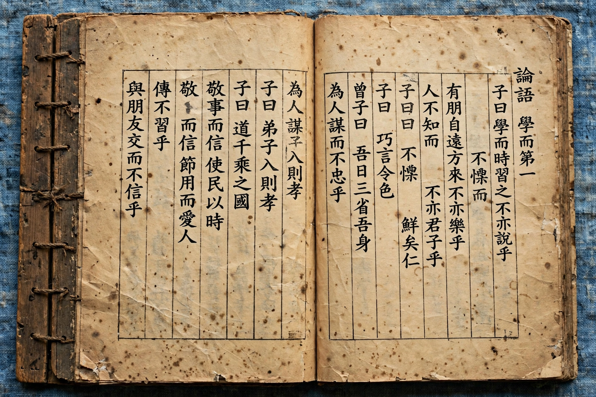

| Nihon Shoki | |
|---|---|
 A printed edition of the Nihon Shoki | |
| Completed | 720 CE |
| Language | Classical Chinese |
| Commissioned by | Imperial court (Empress Genshō era); associated with Prince Toneri |
| Contents | 30 volumes (plus genealogy volume, lost) |
The Nihon Shoki (日本書紀, "The Chronicles of Japan"), sometimes translated as The Chronicles of Japan, is the second-oldest book of classical Japanese history. It is more elaborate and detailed than the earlier Kojiki and has proven to be an important tool for historians and archaeologists as it includes the most complete extant historical record of ancient Japan. The Nihon Shoki was finished in 720 under the supervision of Prince Toneri with the assistance of Ō no Yasumaro, and is dedicated to Empress Genshō.
Like the Kojiki, the Nihon Shoki begins with the Japanese creation myth, explaining the origin of the world and the first seven generations of divine beings, and proceeds through mythological narratives — the descent of Ninigi, the legendary first Emperor Jimmu — into documented history, ending with the reign of Empress Jitō in 697. Unlike the Kojiki, written in a hybrid of Chinese characters used phonetically, the Nihon Shoki is written in classical Chinese, in the manner of Chinese dynastic histories, and gives variant accounts introduced by the phrase "one book says."
The work was the first of the six official national histories (Rikkokushi). Its chronology for the earliest emperors is regarded as artificially extended — it places Jimmu's accession in 660 BCE — but for later centuries it is an indispensable primary source. Together with the Kojiki it underpins much of Shinto mythology and the traditional account of the imperial line's divine descent from the sun goddess Amaterasu.